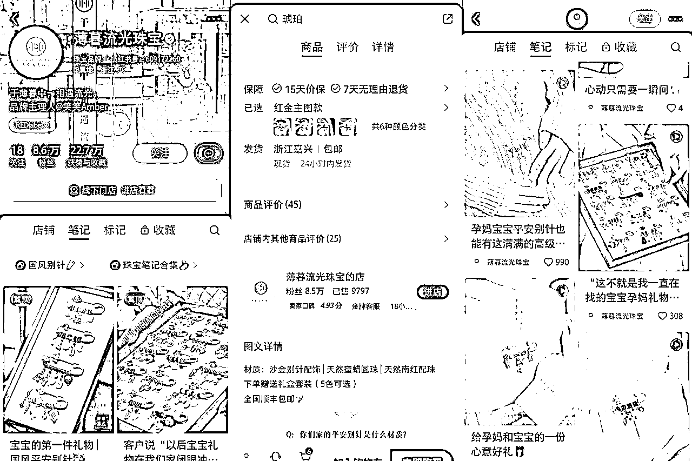
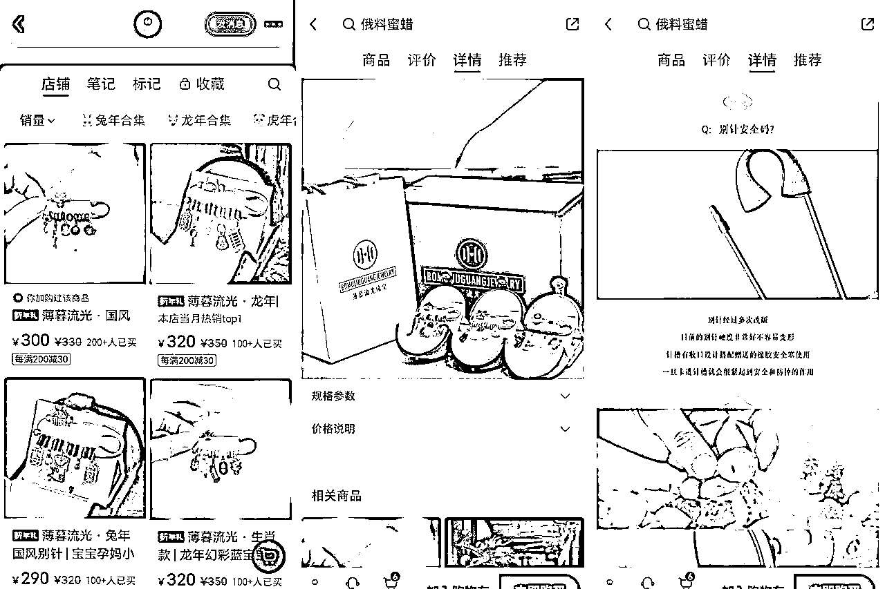
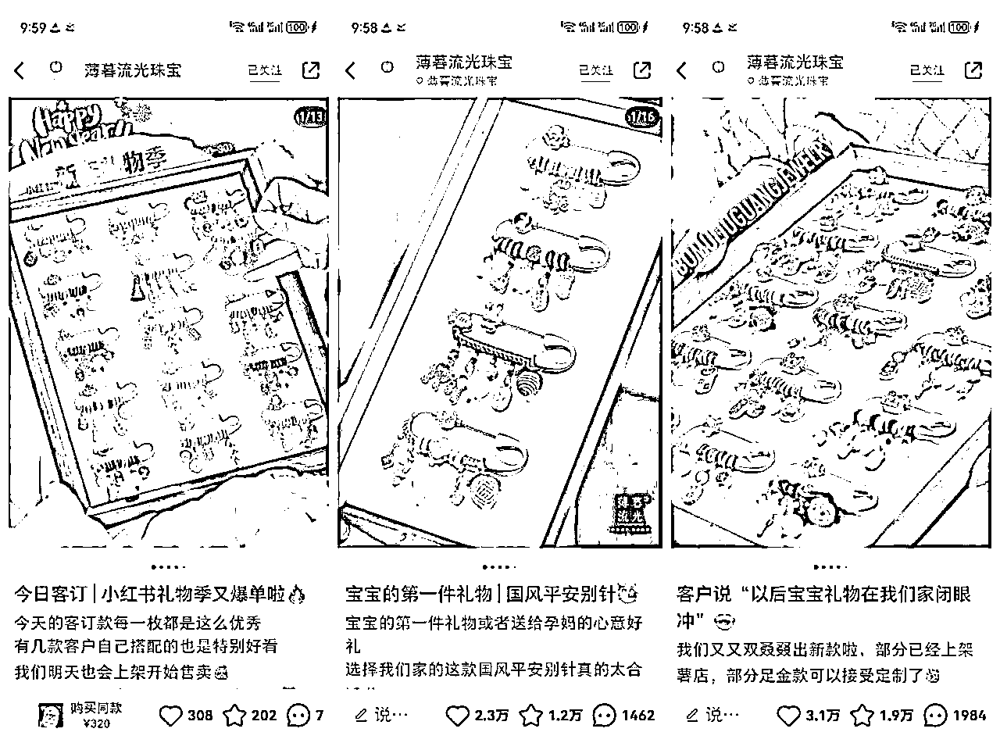
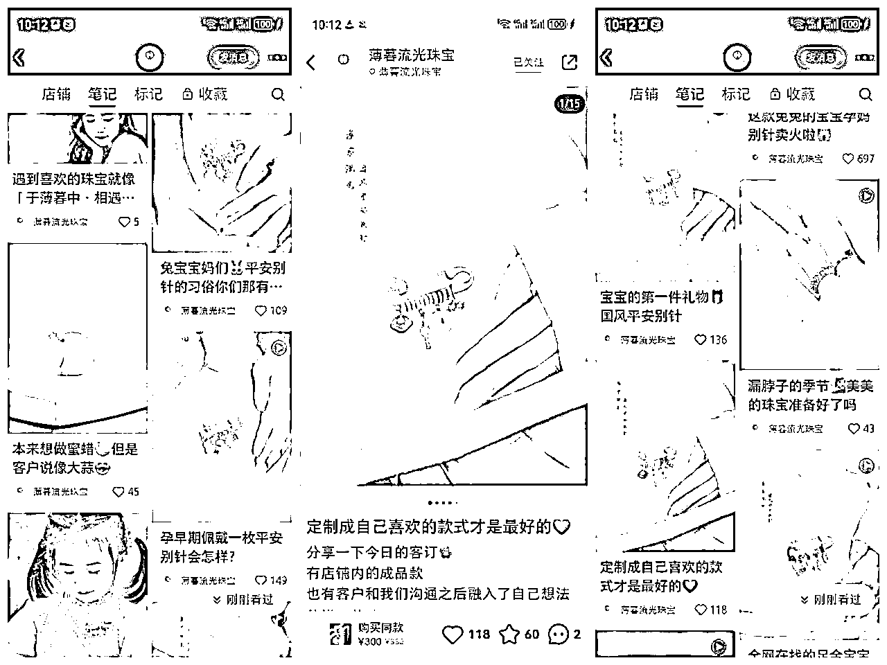
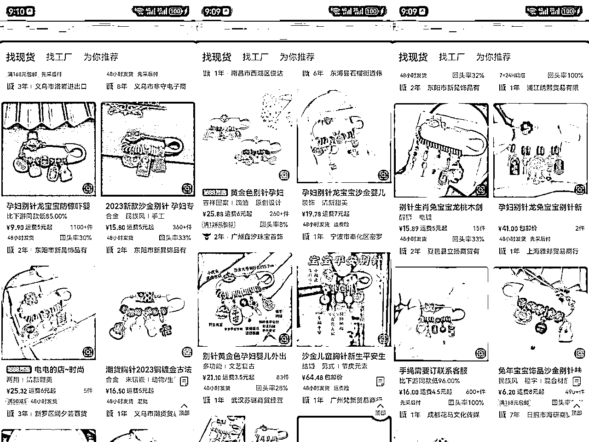

来源：https://h1uqgskj14.feishu.cn/docx/VIY3d1AHFoGJZmxqb3LcQHSxn4f
1、基本情况
产品：宝宝别针（高销量手作饰品）。此账号最开始是卖一些首饰饰品。后面爆单是因为宝宝别针。
一方面是孕妇自己购买有一个好的平安寓意，另外一方面送礼的朋友会买，商家考虑了安全问题处理了别针的头，也配了礼盒。精致小巧又寓意很好的一份礼物，价格根据材质不同290元－4327元。送礼也拿得出手。
但商家目前还没有结合寺庙开光的附加值，其实后面如果有朋友做，可以增加这方面的附加值。
最开始应该是引流私域交易的，目前能统计到的薯店销售件数9797件。大概估算销售额300W+


2、流量怎么运营？
看了品牌帐号和助理人的帐号，都没有直播。笔记布局关键比较丰富，“宝宝礼物”“孕妇礼物”“白天礼物”等，搜索孕妇礼物，笔记非常靠前。自己帐号主要靠笔记。笔记内容以产品展示和上身图为主，不需要露脸，拍摄不复杂。
有买广告。有达人带货。


3、产品怎么解决？
1688有这一类产品。根据材质不同10元-30元。如果非要材质特别好的价格会高，当然最终的售价也很高。

4、利润怎么核算？
销售接近一万件，销售额预估300W。
产品本身成本预估30W。
达人带货佣金30%。大概预估推广的费用30-90W。
利润：180-240W
5、项目如何做&如何放大？
小红书卖宝宝别针的只有几家，还可以继续做。它其实跟手串一样是手作饰品，但受众比较有针对性，孕妇、宝宝，自己佩戴取个好兆头，送礼也非常有新意。不同生肖年份可以有不同图案。还可以参考热卖手串的寺庙开光的附加值，在抖音、视频号，也可以拍点以寺庙为背景的照片和视频，增加更高更好的寓意，定价还能有更大空间。
6、项目结论
本身对手作感兴趣的还可以自己做点有创意的内容，或者进货后稍加改动，比如名字姓氏、或者金木水火土的元素。
单纯进货的话，结合寺庙开光，更有故事可以讲。